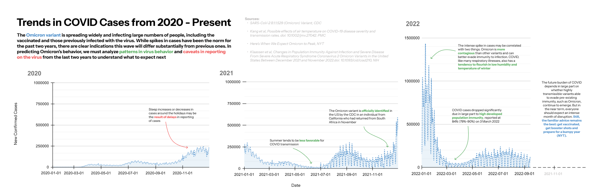

In this assignment, I conduct critical design analysis a visualization from the New York Times, sketch my own version and present a final redesign based on my critiques.

Insights 👀
- It depicts time (by month) in a non-linear spiral scale
- The presence of new cases reduces significantly in mid June of 2021. It almost seems to approach 0 cases and then increases dramatically in the fall months. This seems to convey a pattern than fall and winter is when COVID spreads.
- There seems to be much fluctuation during the first significant rise in new cases Dec 2020 to min-Jan 2021. We begin to see a similar increase in Jan of 2022, but the data cuts off.
- The spiral itself seems off-center from the center point, but looking closer there doesn’t seem to be much meaning in horizontal or vertical distance from the middle.
Critiques 🗒️
While at first glance this visualization is intriguing, I have some critiques about how it can be interpreted by readers. Without reading the article, it was unclear where to begin interpreting it. Displaying time in a non-linear, especially circular, fashion is uncommon in visualizations. Thus, I would have preferred some more overt visual cues (for example: having the 2020, 2021, and 2022 annotations in addition to the month names be bolded, or having the directional arrows be longer). After reading the article, it also seems like this visualization focuses more on the past, as opposed to projecting the future of Omicron cases, like the 2nd visualization does more explictly. Retitling the diagram to “Reported Omicron Cases, United States” may help to reframe the intended goal of the visualization.
Considering the graphic's effective visual encodings, it is clear that is uses mapping data in a continous manner, with the # of COVID cases being depicted in the area around a central line. This gives a good general gist as to the patterns of COVID for the past two years. But, this takes us back to the idea of just noticeable difference and signal detection. Some areas in which there is a large / sudden change in Covid cases, the message is easily conveyed. But around months like April 2021 or August 2020, where the number is more stagnant it is unclear what the magnitude of COVID cases are, especially because the key is in the corner of the graphic and only offers a simplified scale from 0 to 150K cases. Lastly, there was some information that was quite informative in the article itself, that could provide viewers with some more context about how COVID cases spread and how they are reported: like the holiday delay in reporting, or tendency of COVID to lessen in the summer. Conveying that information in the graphic can give context about the past and help readers understand future COVID patterns.
Visualization Sketches 🖌️
Sketch 1

- Exploring making the non-linear time scale easier to grasp on first look.
- Thought separating out each year would help, as it makes the shape more like a clock which is more familiar to people
- I played around with the data-ink ratio by more explicitly writing out the month names, so that readers can more quickly understand monthly trends. But, I removed the lines coming from the midpoint and made the months after Jan 2022 lighter to signal those cases haven't been recorded yet, so the ratio is balanced
- Though, one con is that because the years are separated out, it’s hard to see the carry over of COVID cases from one year to the next. Cases might be misinterpreted as carrying over from the end of the year to the beginning of the same year.
- Instead of having the data be displayed on both sides of the circle, with the dividing line in the center, I bordered it with the outside of the circle so it doesn’t cover the names of the months.
Sketch 2

- Exploring using discrete as opposed to continuous data values.
- Thought this would help with better signal detection for readers when interpreting areas where the changes in data as overt, and communicate more nuances changes in Omicron cases
- I used the color key as a primary way to distinguish years, to increase the data-ink ratio.
- Also wanted to play around with the con from the first sketch, where having the year separated out too much can make it hard to see the carry over in Omicron cases.
- Though, I think this sketch still potentially encounters the problem of the carry over being misinterpreted as the end of the year to the beginning of the same year.
Sketch 3

- Exploring using a non-circular layout and highlighting key periods in time between years (as detailed in the article)
- Having a linear scale also avoids the issue in the last sketch of the yearly carry over in cases being misinterpreted as being within the same year.
- Pulling back on drawing attention to the years themselves, and more explicitly drawing attention to sections within those years where there are COVID-19 “caveats” (it behaves different, or data reporting on it functions differently)
- I thought this could help readers better understand the patterns of how spreads throughout the year and how reporting on COVID could be flawed. So, I added annotations to facilitate this
Final Visualization Design 👩🎨
 Click this link to see the visualization in a wider pageFor the final visualization, I decided to structure it in a linear form because I realized that the non-linear, spherical scale in the original sketch doesn’t particularly add much valuable information besides making it more stylistical interesting. Refining my first two sketches, I wanted to better convey the carry over of COVID cases from year to year, while still making each year distinct. Thus, I chose to use small multiples instead of a continuous graph in my last sketch, as the graphs are close enough that readers can comprehend the connection between years, while still being distinct enough to understand the unique trends faced each year. In terms of data cleaning, there were 2 negative values in new_confirmed cases, so I excluded them as those were non-sensical and likely an error in human input.
Within each graph component itself, I wanted to decrease the visual clutter to make more space for the annotations. Thus, I chose a lighter colored underneath the area graph so they would be easier to read. I also selectively pulled back on grid lines and labels to achieve the same goal. But, to help convey the intention of the graph itself (in analyzing/predicting trends and data), I included a dotted x-axis in the 2022 component. I also was inspired by the Upshot’s Peyton Manning visualization and wanted to play with the vertical axis labels and white space in the chart in a similar way. To increase visual pop-out and draw attention to specific regions of note in the data, I made sure to use a color palette that contrasted, and thus used blue, green, and red to annotate.
The process of critique by redesign was really helpful as it allowed me to pinpoint exactly what I enjoyed or did not enjoy about the original visualization, and see how that can manifest differently by redesigning multiple times. It also revealed things that weren’t apparent at first. After completing the process of redesign, and comparing my final design to the original visualization, I realized there’s an aspect of humanity that gets lost when using visualizations as common as bar charts. The creativity embedded in using a spiral adds a layer of nuance and life that I hope to try and capture in my coming projects.